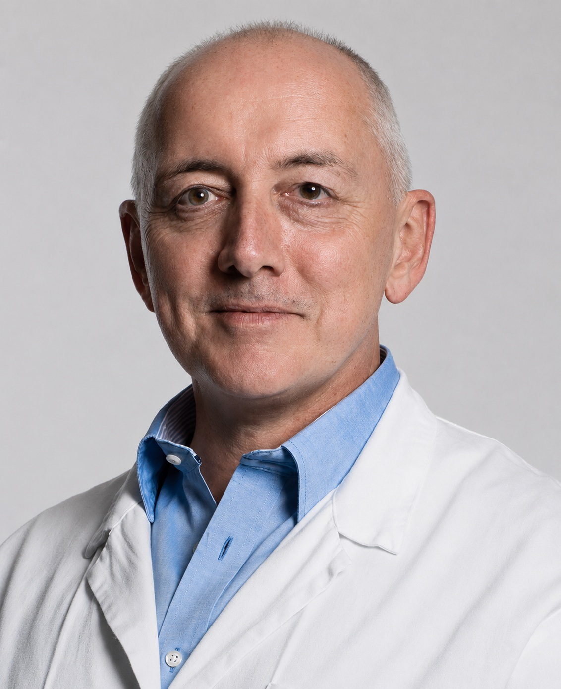

Углублённая диагностика.
Детальное экспертное УЗИ (в том числе 3D/4D) для раннего выявления пороков развития, допплерография, ведение многоплодных и осложнённых беременностей.

Фетоматеринская медицина
Ведущий эксперт по медицине матери и плода с более чем 20-летним опытом. Специализируется на углублённой пренатальной диагностике и ведении беременностей высокого риска.
О враче
Период ожидания ребёнка — время, когда здоровье матери и будущего малыша требует самого внимательного наблюдения. В сложных случаях или при желании получить доступ к лучшей пренатальной диагностике мира выбор падает на специалистов мирового уровня. Таким авторитетом в Швейцарии является профессор Борис Тучек — его практика в Privatklinik Bethanien стала центром передовых знаний в области здоровья матери и плода.
Детальное экспертное УЗИ (в том числе 3D/4D) для раннего выявления пороков развития, допплерография, ведение многоплодных и осложнённых беременностей.
Основатель Европейской рабочей группы по аномально инвазивной плаценте (EW-AIP) — доступ к новейшим клиническим протоколам.
До переезда в Швейцарию в 2008 году вёл научную деятельность в университетских клиниках Берна, Гамбурга и Дюссельдорфа.
Свободно владеет немецким, французским и английским; для русскоязычных семей CorSwiss обеспечивает профессиональный медицинский перевод.
Мы берём на себя все организационные вопросы: от записи на экспертную консультацию или «второе мнение» до полной координации визита в Швейцарии — трансфер, проживание, сопровождение переводчика и персональный ассистент на каждом этапе.
Признание
EW-AIP · European Working Group on Abnormally Invasive Placenta
Научная деятельность · Берн, Гамбург, Дюссельдорф
SGGG · Schweizerische Gesellschaft für Gynäkologie und Geburtshilfe
Ведение беременностей высокого риска · экспертное УЗИ 3D/4D

Где принимает врач
Многопрофильная частная клиника в Цюрихе и наш ключевой партнёр с 2011 года. Входит в сеть Swiss Medical Network, ассоциированную с Mayo Clinic Care Network. Оснащена ультразвуковым оборудованием последнего поколения.
Открыть страницу клиникиГотовы записаться?